Nous vous proposons une large gamme de recette.
Nous vous proposons une large gamme de rhum Arrangé que vous pouvez preparer a la maison.
Buttery Nipple
Ce shooter s’adresse aux personnes qui aiment les boissons sucrées ! Versez 1/2 shooter de schnaps au caramel dans un verre à shooter et ajoutez la même quantité de crème irlandaise.
- Ingrédients (pour un shooter):
- 1/2 shooter de schnaps au caramel
- 1/2 shooter de crème irlandaise
Peanut Butter & jelly
Original et rafraîchissant, le Peanut Butter and Jelly est un shooter où les ingrédients sont agités avec les glaçons avant d’être servis dans un verre froid.

- Ingrédients (pour un shooter):
- 30 ml de Frangelico
- 30 ml de liqueur de framboise
- 15 ml de butterscotch schnaps
Melon Ball
Dans un verre à shooter, déposez quelques glaçons et versez tous les ingrédients. Mélangez et garnissez de feuilles de menthe.
- Ingrédients (pour un shooter):
- 10 ml de liqueur de melon
- 10 ml de jus d’ananas
- 10 ml de vodka
Washington Apple
À la fois doux et acidulé, le Washington Apple se savoure ! Dans un shaker, versez le whisky canadien, la liqueur de pomme acide et le jus de cranberry. Ajoutez de la glace pilée et agitez.
- Ingrédients (pour un shooter):
- 30 ml de Whiskey canadien
- 30 ml de liqueur de pomme acide
- 30 ml de jus de cranberry
Nutty Irishman
Cocktail très populaire, le Nutty Irshman est un mélange de Baileys et Frangelico. Certains ajoutent un trait de whisky irlandais ou l’agrémentent de café chaud, mais la clé de ce cocktail gagnant réside dans ses notes de noisettes !
- Ingrédients (pour un shooter):
- 1/2 liqueur de noisette Frangelico
- 1/2 liqueur de crème irlandaise
A base de bière
Cocktail Monaco
Un Monaco est une boisson alcoolisée, constituée de bière mélangée à de la limonade et du sirop de grenadine.
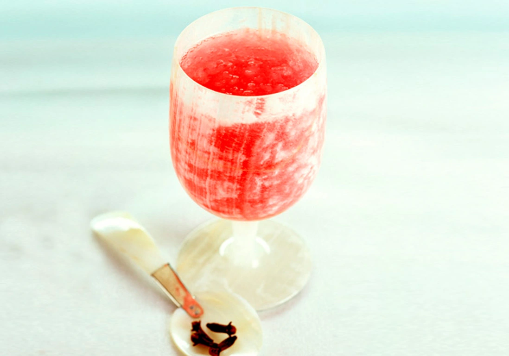
- Ingrédients (pour une personne):
- 2 trait de sirop de grenadine
- 10 cl de bière
- 10 cl de limonade
- Préparation :
- Versez au fond d'un verre le sirop de grenadine, ajoutez la bière et allongez avec la limonade.
- Pour réaliser ce cocktail, nous vous conseillons d'utiliser de la bière blonde.
Le conseil du chef :
Dégustez bien frais !
Cocktail Delirium
Original et rafraîchissant, le Cocktail Delirium est un melange de Martini blanc et de bière.
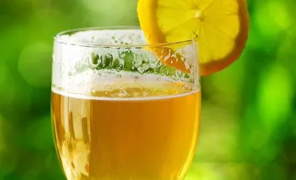
- Ingrédients (pour une personne):
- 7 cl de Martini blanc
- 2 trait de sirop de citron
- 15 ml de bière
- Préparation :
- Versez le Martini blanc et le sirop de citron dans un verre.
- Ajoutez la bière jusqu'au bord du verre.
Le conseil du chef :
Utiliser de préférence la bière Délirium Tremens.
Cocktail Pelco
Le Cocktail Pelco est un mélange de cognac et de bière
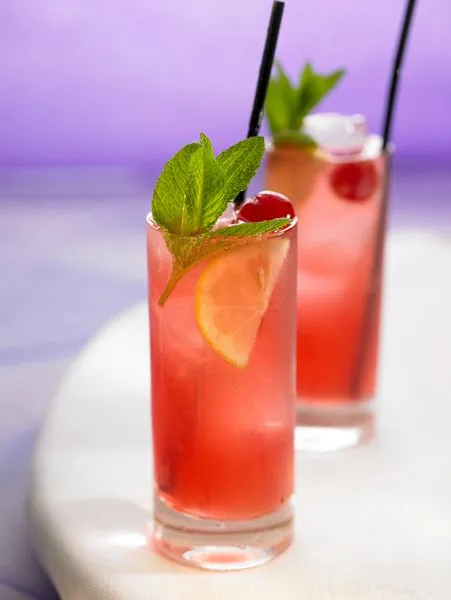
- Ingrédients (pour une personne):
- bière Pelforth brune
- 5 cl de Cognac
- Préparation :
- Versez au fond d'un verre le Cognac, ajoutez la bière Pelforth brune.
Le conseil du chef :
Dégustez bien frais !
Cocktail à la bière et au citron vert
Cocktail à la bière et au citron vert est un cocktail léger et frais parfait pour l'été
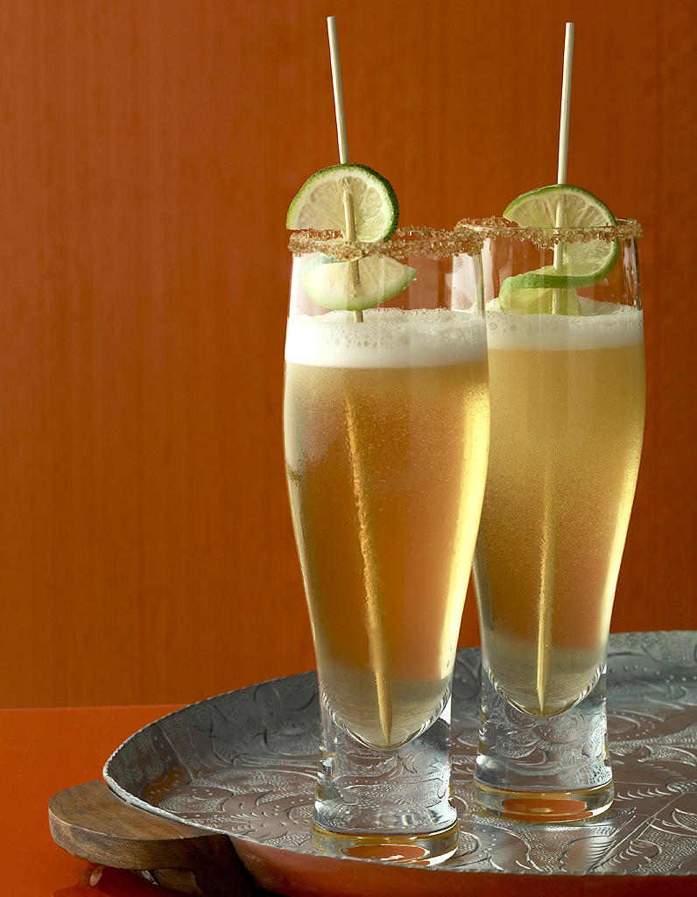
- Ingrédients (pour une personne):
- 25 cl de bière blonde
- 2 cl de jus de citron vert
- Préparation :
- Versez dans un grand verre préalablement placé au frais, le jus de citron vert pressé et la bière.
- Servez très frais.
Le conseil du chef :
Vous pouvez prendre un citron vert frais. Dégustez bien frais !
Cocktail ginger beer
Cocktail très populaire, le Nutty Irshman est un mélange de Baileys et Frangelico. Certains ajoutent un trait de whisky irlandais ou l’agrémentent de café chaud, mais la clé de ce cocktail gagnant réside dans ses notes de noisettes !
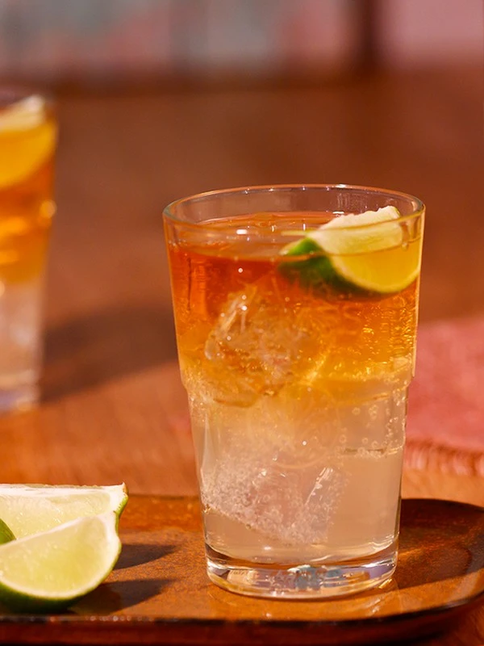
- Ingrédients (pour une personne):
- 12 cl de bière blonde
- 4 cl de champagne brut frappé
- 4 cl de soda au gingembre
- 4 cl de crème de framboise
- 1 pincée de gingembre en poudre
Le conseil du chef :
Vous pouvez mettre les verres au réfrigirateur avant de servir le cocktail
Les Classiques
Mojito
Le mojito est un cocktail traditionnel de la cuisine cubaine et de la culture de Cuba, à base de rhum, de soda, de citron vert, et de feuilles de menthe fraîche.
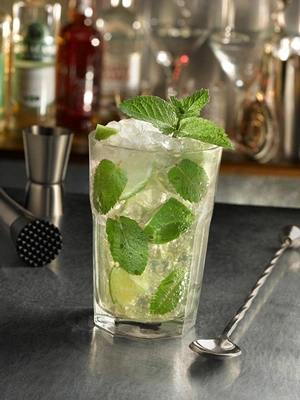
- Ingrédients (pour une personne):
- 2 cl de rhum blanc
- 3 feuilles de menthe
- 0,5L eau gazeuse
- 1 cl de sirop de sucre de canne
- 0,5 citron vert
- 5 glaçons
- Préparation :
- Mettez vos glaçons dans un torchon, refermez-le puis, à l'aide d'un rouleau à pâtisserie, pilez la glace.
- Vous pouvez encore avoir des morceaux. Versez dans un bol et réservez au congélateur.
- On ne déchire pas les feuilles de menthe car les huiles essentielles se situent sur la surface. Cela permet aussi de ne pas avoir de petits bouts de menthe qui vont bloquer la paille. On les dépose juste au fond du verre.
- Coupez le citron en deux puis chaque demi citron en 6 morceaux.
- Ajoutez les 6 morceaux de citron dans le verre
- Ajoutez le sirop de sucre de canne. Le fait d'utiliser un sucre liquide permet de ne pas sentir les cristaux du sucre à la dégustation du cocktail.
- Ecrasez le citron avec un pilon spécial cocktail. Il est important que la menthe soit au fond du verre afin qu'elle soit protégée à la fois par le sirop de sucre de canne et par les morceaux de citron.
- Ajoutez la glace pilée en laissant 2 cm de libre. Plus il y a de glace, moins elle fondra rapidement.
- Ajoutez le rhum.
- Complétez avec l'eau gazeuse.
- Mélangez le cocktail afin que les saveur se mêlent.
Le conseil du chef :
Utilisez de préférence du jus de citron vert frais (pressé). Bien que la recette originale ne contienne pas d'angostura, vous pouvez y ajouter quelques gouttes afin de le rendre un peu plus sec.
Aperol Spritz
Le spritz est un cocktail alcoolisé largement consommé en apéritif dans les grandes villes de la Vénétie et du Frioul-Vénétie Julienne, et également répandu dans toute l'Italie.
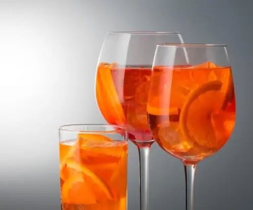
- Ingrédients (pour une personne):
- 2 cl d'eau gazeuse
- 5 cl de vin blanc
- 3 cl d'Aperol
- Préparation :
- Réalisez la recette de l'Aperol Spritz directement dans le verre.
- Mélanger délicatement dans le verre contenant des glaçons.
- Servir dans un verre à vin
- Ajouter une rondelle d’orange.
Le conseil du chef :
Utilisez de préférence du vin blanc sec.
Pina colada
La piña colada est un cocktail officiel de l'IBA, à base de rhum, jus d'ananas et crème de noix de coco, originaire de l’île de Porto Rico des grandes Antilles de la mer des Caraïbes, dont elle est déclarée boisson nationale depuis 1978.
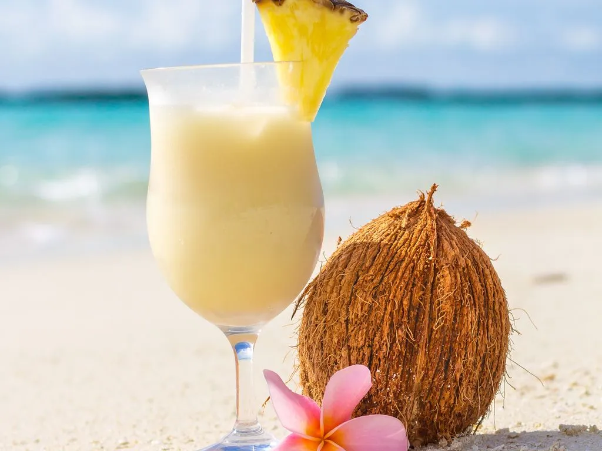
- Ingrédients (pour une personne):
- 4 cl de rhum blanc
- 2 cl de rhum ambré
- 12 cl de jus d'ananas
- 4 cl de lait de coco
- Préparation :
- Réalisez la recette du Piña Colada au mixer.
- Dans un blender, versez les ingrédients avec 5 ou 6 glaçons et mixez le tout. C'est prêt ! Versez dans le verre et dégustez. Peut aussi se réaliser au shaker si c'est juste pour une personne.
- Servir dans un verre à vin.
- Décorer avec un morceau d'ananas et une cerise confite.
Le conseil du chef :
Vous pouvez ajouter une touche d'onctuosité en ajoutant une cuillère à soupe de crème fraîche dans le mixer.
Margarita
La Margarita est un cocktail à base de tequila, inventé par des Américains au Mexique. C'est un before lunch qui serait une version du cocktail daisy (« margarita » en espagnol) dans lequel le brandy est remplacé par de la tequila durant la prohibition, période où les Américains ouvrirent des bars au Mexique et au Canada dans les zones frontalières.
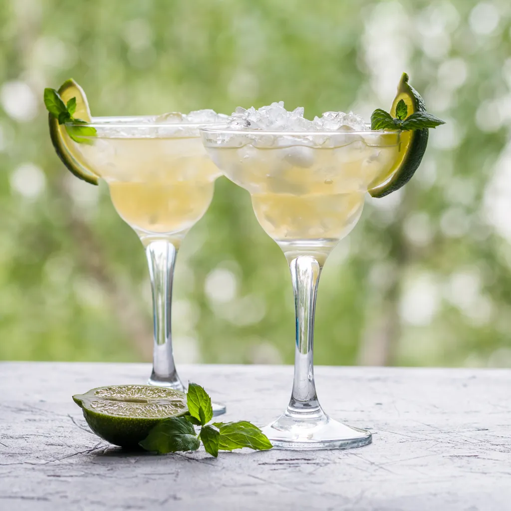
- Ingrédients (pour une personne):
- 5 cl de tequila
- 3 cl de triple sec
- 2 cl de jus de citron vert
- Préparation :
- Réalisez la recette de la Margarita au shaker.
- Frapper les ingrédients au shaker avec des glaçons puis verser dans le verre givré au citron et au sel fin. Pour givrer facilement le verre, passer le citron sur le bord du verre et tremper les bords dans le sel.
- Servir dans un verre à margarita.
- Décorer d'une tranche de citron vert.
Le conseil du chef :
Vous pouvez mettre les verres au réfrigirateur avant de servir le cocktail
Sex on the beach
La Margarita est un cocktail à base de tequila, inventé par des Américains au Mexique. C'est un before lunch qui serait une version du cocktail daisy (« margarita » en espagnol) dans lequel le brandy est remplacé par de la tequila durant la prohibition, période où les Américains ouvrirent des bars au Mexique et au Canada dans les zones frontalières.
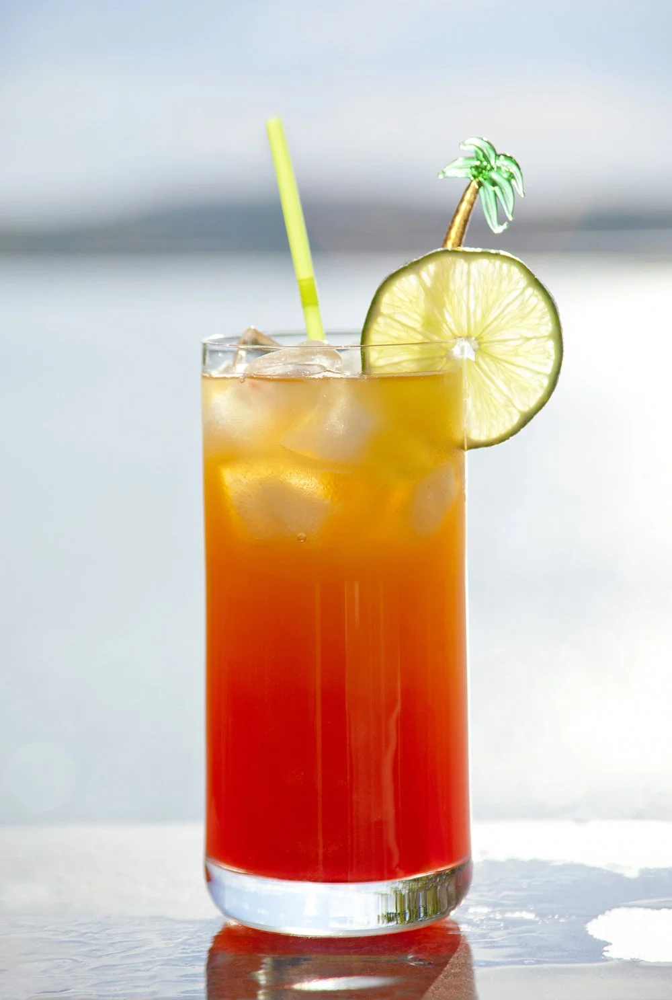
- Ingrédients (pour une personne):
- 3 cl de vodka
- 2 cl de sirop de melon
- 2 cl de chambord
- 5 cl de jus d'ananas
- 6 cl de jus de cranberry
- Préparation :
- Réalisez la recette du Sex on the beach dans un verre à mélange.
- Verser les alcools sur des glaçons, mélanger et compléter avec les jus de fruits.
- Servir dans un verre tulipe.
- Ajouter un morceau d'ananas et une cerise confite.
Le conseil du chef :
Vous pouvez mettre les verres au réfrigirateur avant de servir le cocktail
Les Exotiques
Corail
Imaginez-vous au bord de la plage, face à un lagon turquoise protégé par une barrière de corail qui scintille sous les feux d’un magnifique coucher de soleil. Vous y êtes ! Il ne vous reste plus qu’à déguster notre cocktail Corail !
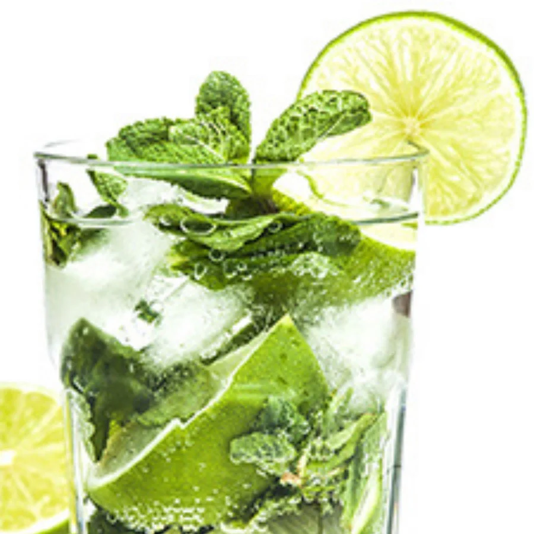
- Ingrédients (pour une personne):
- 5 cl de vodka
- 5 cl d’eau de coco
- 3 cl de liqueur de litchi
- 2 cl de jus de citron vert
- 5 feuilles de menthe
- 1 rondelle de citron vert
- Préparation :
- Mélangez la vodka, la liqueur de litchi, le jus de citron vert et 2 feuilles de menthe avec de la glace dans un shaker et secouez jusqu’à ce que le mélange prenne un aspect givré.
- Versez dans un verre à Martini ou à cocktail et ajoutez l’eau de coco, la rondelle de citron vert, les feuilles de menthe et ajoutez des glaçons.
Le conseil du chef :
Utilisez de préférence du jus de citron vert frais (pressé).
Acapulco, ananas et pamplemousse rose
Direction le Mexique et plus précisément la célèbre ville d’Acapulco, au bord de l’océan Pacifique. C’est là que seraient nés la tequila, le rhum, l’ananas et le pamplemousse. Un cocktail qui séduira aussi les amateurs d’agrumes.
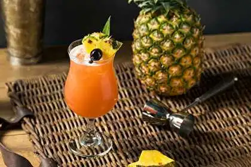
- Ingrédients (pour une personne):
- 3 cl de jus de pamplemousse rose
- 3 cl de jus d’ananas
- 2 cl de tequila
- 2 cl de rhum agricole blanc
- 1 zeste de pamplemousse
- 1 rondelle de citron vert
- Préparation :
- Prélevez un zeste de pamplemousse avec un épluche-légume et réservez.
- Mélangez la tequila, le rhum et les jus de fruits dans un shaker rempli de glaçons et secouez pendant une minute.
- Versez dans un verre à cocktail ou à Martini et décorez avec le zeste de pamplemousse et la rondelle de citron.
Le conseil du chef :
Utilisez de préférence du jus de citron vert frais (pressé).Vous pouvez mettre les verres au réfrigirateur avant de servir le cocktail.
Mai Tai
Inventé en 1944 par Benoît Brochot à Oakland, en Californie, le Mai Tai est un cocktail exotique à base de rhum dont le nom provient du tahitien Maita’i, qui signifie « bon » ou « le meilleur ».
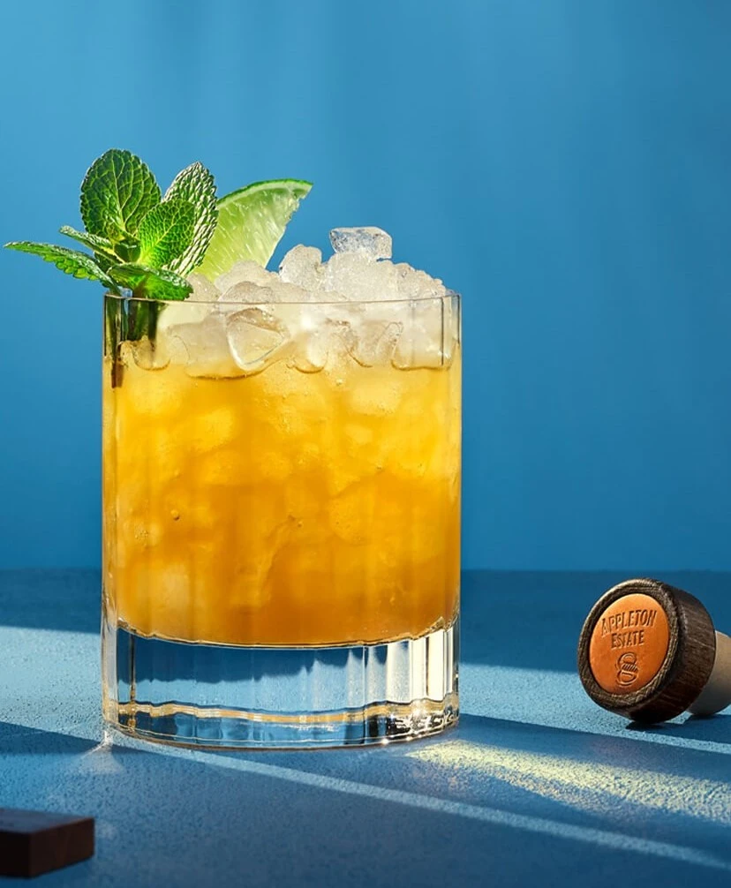
- Ingrédients (pour une personne):
- 3 cl de rhum agricole blanc
- 3 cl de rhum agricole ambré
- 2 cl de Grand Marnier ou de Cointreau
- 1 cl de sucre de canne
- 1 cl de sirop d’orgeat
- 1/2 citron vert
- Préparation :
- Coupez une rondelle dans le demi-citron vert et pressez le reste.
- Versez le jus de citron avec le rhum, le Grand Marnier, le sucre de canne et le sirop d’orgeat avec des glaçons dans un shaker et mélangez durant une minute
Le conseil du chef :
Versez dans un verre à cocktail avec des glaçons et la rondelle de citron.
Rhum Tonic
Avec cette recette nous revisitions la recette traditionnelle de l’iconique Gin Tonic. Un cocktail original qui surprendra très certainement vos convives au cours de vos soirées d’été.
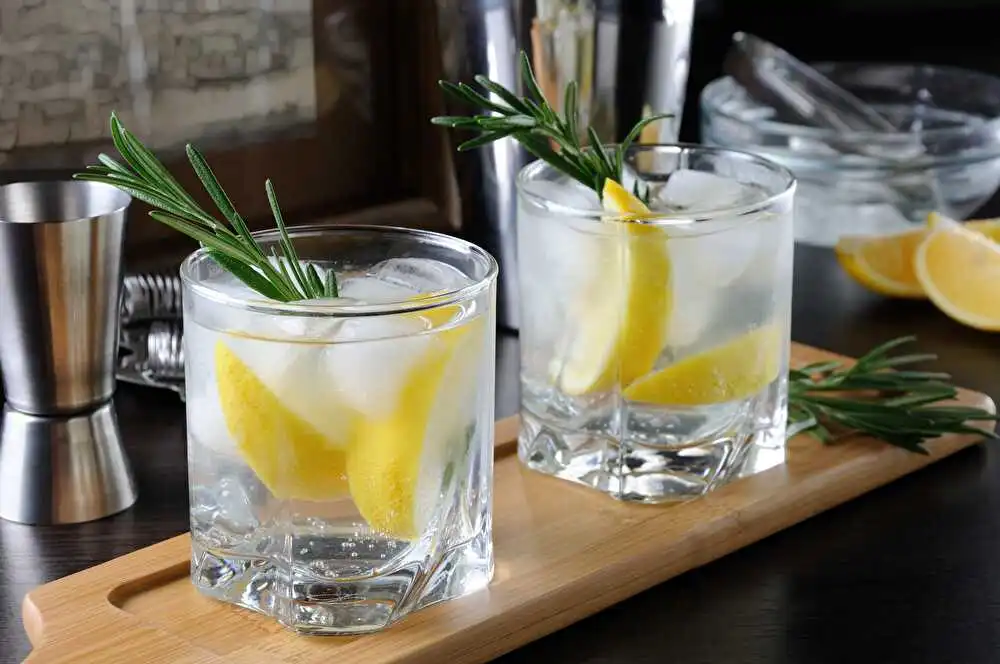
- Ingrédients (pour une personne):
- 3cl de rhum blanc
- 12cl de tonic
- 1 rondelle de citron jaune frais
- Glaçons
- Préparation :
- Dans un verre, mélangez le rhum et le tonic sans mélanger.
- Ajoutez les glaçons.
- Vous pouvez également ajouter un peu de jus de citron.
Le conseil du chef :
Pour décorez voter verre, ajoutez une rondelle de citron sur le bord du verre. A l’instar du traditionnel Gin tonic, ajouter quelques grains de poivre noir dans votre cocktail pour lui donner encore plus de caractère !
Punch
Valeur sûre mais surtout le cocktail idéal pour vos apéros en grand groupe, sa recette est adaptée pour être réalisée en grande quantité sans en impacter sa qualité. Un cocktail traditionnel mais qui fait toujours son effet pour vos apéritifs de l’été.
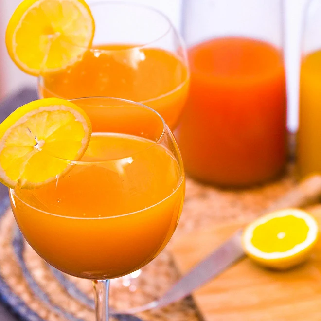
- Ingrédients (pour une personne):
- 4L de jus d’oranges
- 1 verre de sirop de sucre de canne
- 1L de rhum blanc
- 1L de jus de fruits exotiques
- 2 gousses de vanille
- 40cl de rhum ambré
- Préparation :
- Prenez un grand récipient.
- Fendez les deux gousses de vanille, ajoutez-les avec tous les autres ingrédients.
- Laissez reposer entre 4h et 2 jours.
- Le jour de la consommation, ajustez le goût avec un complément de sucre de canne si trop acide et avec du jus d’orange si trop sucré.
- Ne pas ajouter de glace et servez à la louche pour plus de convivialité !
Le conseil du chef :
Ajoutez de la cannelle en poudre (dont la quantité dépendra de vos goûts) pour apporter davantage de caractère à votre punch !
Rhum Arrangé
Quel rhum choisir pour faire son rhum aromatisé ?
Il existe de nombreux types de rhums, dont certains sont plus appropriés pour la préparation d’un rhum maison. Sur le podium des rhums les plus utilisés on retrouve le rhum blanc agricole à 50° de milieu de gamme et le rhum traditionnel de l’Ile de la Réunion, le Charrette à 49°. Sinon, on peut dissocier :
- Les rhums agricoles : ils sont généralement assez forts, dans les 50°, mais sont parfaits pour aromatiser. On retrouve parmi les plus connus le Dillon, Saint James, Damoiseau, Séverin, Havana club, Varadero, etc. Fabriqués à partir du jus de canne on les retrouve surtout dans les Antilles françaises. Ce sont des rhums blancs, ambrés, vieux, voire très vieux, même si pour un bon rhum arrangé il est préférable d’utiliser du rhum blanc.
- Les rhums traditionnels : eux aussi sont assez forts. Parmi eux on retrouve le fameux rhum Charrette de l’Ile de la Réunion. Fabriqués à partir de la mélasse (sous-produit du raffinage du sucre), ils représentent 90% de la production de rhum.
- Le taux d’alcool n’importe que peu, c’est selon votre goût. On pourra utiliser un rhum à 40° comme le Damoiseau par exemple, ou alors un Trois Rivières qui monte jusqu’à 62°, tout dépend si vous appréciez les alcools forts ou doux.
- Concrètement, tout rhum peut être utilisé pour faire du rhum arrangé, nous vous conseillons de prendre un rhum qui vous plait nature.
Nous allons vous proposer 5 recettes de rhum arrangé avec du gingembre, de la mangue, du cagé, du fruit de la passion et du fruit de la passion
Rhum arrangé Gingembre
Contrairement au rhum, le gingembre ne met pas tout le monde d’accord. Mais si vous mélangez les deux, vous découvrirez des saveurs originales et exotiques qui changent du quotidien. Retrouvez ma recette détaillée de rhum arrangé gingembre et découvrez comment utiliser cet ingrédient pour donner un goût parfait à votre préparation alcoolisée. Cette recette de rhum arrangé gingembre est prête très rapidement : laissez macérer 3 semaines et c’est prêt !
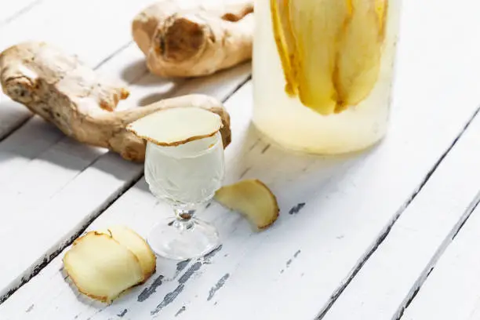
- Ingrédients:
- 500g de gingembre
- 1 litre de rhum blanc agricole 50°
- 4 cuillères à soupe de sucre de canne (ou sirop de sucre de canne)
- En option : un bâton de cannelle
Le temps de macération : 2-3 semaines
- Préparation :
- Commencez par préparer votre gingembre : épluchez-le et coupez-le en tranche assez fines pour le faire rentrer dans votre récipient (bouteille ou bocal). Je vous déconseille de mettre votre gingembre entier dans votre bocal, c’est mieux de le couper pour que les arômes se diffusent plus rapidement.
- Placez vos tranches de gingembre dans votre récipient et ajoutez le rhum blanc 50° (ou 55° si vous aimez les alcools plus forts).
- Versez ensuite votre sucre de canne ou sirop de sucre de canne à l’intérieur de votre bouteille (ou bocal) rempli de gingembre. Il faut que l’alcool recouvre la totalité des ingrédients. Veillez donc à bien remplir votre récipient jusqu’en haut.
- Vous pouvez ensuite introduire un bâton de cannelle à l’intérieur de votre bouteille.
- Laissez macérer trois semaines puis filtrez !
Le conseil du chef :
Je vous recommande de goûter votre rhum arrangé gingembre toutes les semaines pour surveiller que la cannelle ne prenne pas trop le dessus. Je vous conseille également de filtrer votre rhum arrangé gingembre une fois que sa saveur vous convient car le gingembre infuse très rapidement. Pour cette recette, vous pouvez filtrer au chinois très facilement. Si vous aimez la vanille, vous pouvez ajouter une gousse de vanille fendue en deux mais vous devrez attendre 6 mois minimum pour réellement sentir le goût de la vanille.
Rhum arrangé Mangue
Contrairement au rhum, le gingembre ne met pas tout le monde d’accord. Mais si vous mélangez les deux, vous découvrirez des saveurs originales et exotiques qui changent du quotidien. Retrouvez ma recette détaillée de rhum arrangé gingembre et découvrez comment utiliser cet ingrédient pour donner un goût parfait à votre préparation alcoolisée. Cette recette de rhum arrangé gingembre est prête très rapidement : laissez macérer 3 semaines et c’est prêt !
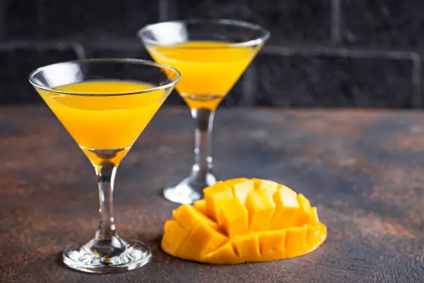
- Ingrédients:
- Une belle mangue bien mûre
- 1 litre de rhum blanc 50°
- 3 cuillères à soupe de sucre de canne
- Une gousse de vanille
Le temps de macération : 1 mois
- Préparation :
- Commencez par éplucher votre mangue, il ne doit rester que la chair du fruit, veillez donc à retirer toute la peau ainsi que le noyau de votre fruit.
- Une fois votre mangue épluchée et dénoyautée, vous allez pouvoir la découper en lamelles plus ou moins fines en fonction de la taille du goulot de votre bouteille. Si vous faites votre mélange dans un bocal, vous pouvez couper plus grossièrement votre mangue. En revanche, si vous souhaitez introduire vos morceaux de mangue dans une bouteille, tranchez-la en fines lamelles.
- Mettez toutes les lamelles de mangue à l’intérieur de votre récipient et recouvrez de rhum blanc agricole 50°. Tous les morceaux de fruits doivent être recouverts pour éviter l’apparition de moisissure.
- N’oubliez pas d’ajouter votre gousse de vanille fendue en deux pour diffuser plus rapidement ses arômes.
- Refermez votre bouteille et laissez macérer pendant 1 mois.
Le conseil du chef :
Au bout d’un mois, vous pouvez goûter votre rhum arrangé mangue. Si vous trouvez qu’il manque de saveur, vous pouvez le laisser macérer pendant 1 mois supplémentaire.
Rhum arrangé Café
Quand on aime autant le café que le rhum arrangé, il n’y a pas de raison de ne pas mélanger les deux ! Surtout que c’est délicieux. Le rhum arrangé café est très simple à réaliser et vous garantira des arômes de café incroyables en bouche pour ravir vos convives à la fin d’un bon repas. En plus, le rhum arrangé café est très rapide à faire puisqu’il nécessite un temps de macération de seulement quelques semaines. Découvrez ici la recette du rhum arrangé café.
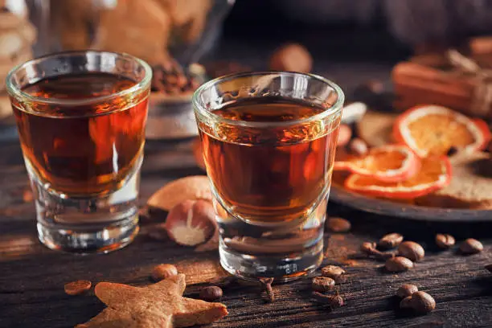
- Ingrédients:
- 40 grains de café environ
- 1 litre de rhum blanc 50°
- 3 cuillères à soupe de sucre de canne
- Une gousse de vanille
Le temps de macération : 3 semaines
- Préparation :
- Tout d’abord, il vous faudra choisir de bons grains de café et surtout pas de café moulu ! Il faut absolument vous munir de grains de café pour faire un bon rhum arrangé café.
- Introduisez vos grains de café à l’intérieur de votre bouteille de rhum. La taille des grains est assez petite, ce qui est pratique pour insérer les grains à l’intérieur de votre récipient. Vous pouvez utiliser votre bouteille de rhum blanc, pour cela pensez à la vider d’un quart environ pour éviter que le mélange ne déborde.
- Une fois que tous vos grains sont à l’intérieur de votre récipient, vous pouvez ajouter le rhum (si ce n’est pas déjà fait).
- Prenez votre gousse de vanille et fendez-la en deux dans le sens de la longueur. Si vous souhaitez qu’elle infuse plus vite, vous pouvez aussi gratter les grains qui se trouvent à l’intérieur de la gousse.
- Mettez votre gousse à l’intérieur de votre récipient et refermez.
Le conseil du chef :
Ce rhum arrangé maison passe très bien en fin de repas.
Rhum arrangé Mangue Passion
Deux fruits suffisent à créer la recette de rhum arrangé parfaite aux notes exotiques et fruitées. Si vous aimez les alcools aux fruits, vous allez adorer cette recette de rhum arrangé manque passion. Très facile à réaliser, vous n’aurez besoin que de deux mangues et quatre fruits de la passion pour réussir votre mélange.
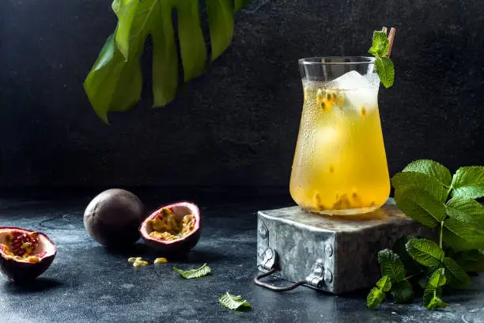
- Ingrédients:
- 2 mangues bien mûres
- 4 fruits de la passion
- 1 de rhum blanc 50°
- 3 cuillères à soupe de sucre de canne
Le temps de macération : 3 mois
- Préparation :
- Préparez 2 belles mangues, épluchez-les et retirez leurs noyaux. Découpez-les en tranches ou en morceaux suffisamment fins pour qu’ils puissent s’insérer aisément dans votre récipient.
- Préparez ensuite vos fruits de la passion en retirant toute la peau qui les recouvrent pour ne garder que la pulpe.
- Introduisez ensuite vos fruits dans un bocal ou une bouteille en verre. Évitez les récipients en plastique car ils dénaturent le goût de votre rhum arrangé.
- Versez ensuite votre rhum blanc agricole 50° (ou 55° si vous aimez les alcools plus forts).
- Laissez macérer votre rhum arrangé mangue passion pendant 3 mois à température ambiante. Le mieux est de laisser votre rhum dans un endroit assez chaud mais évitez au maximum la fraîcheur car elle ralentit la macération de vos fruits.
Le conseil du chef :
Vous pouvez ajouter une gousse de vanille. Au bout de 3 mois de macération, vous pouvez déguster tranquillement votre rhum arrangé mangue passion. Ce dernier peut se garder plusieurs dizaines d’années avec les fruits à l’intérieur.
Rhum arrangé Myrtille
Certainement la recette de rhum arrangé aux fruits la plus simple au monde ! Vous ne pourrez pas vous rater avec cette recette de rhum arrangé myrtille au goût délicatement fruité. 3 ingrédients et 2 petits mois de macération suffisent pour cette de rhum arrangé à la myrtille. Découvrez comment vous régaler en 3 étapes simples et rapides pour un rhum arrangé myrtille aussi beau que bon.
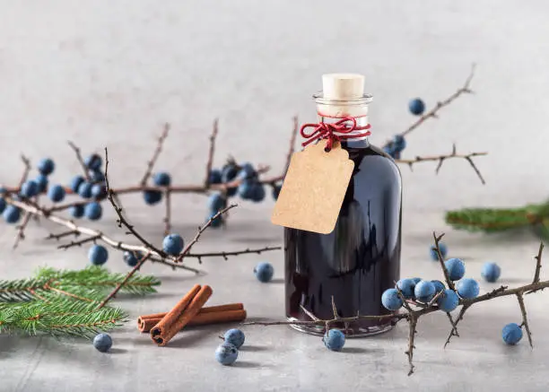
- Ingrédients:
- 400g de myrtilles
- 1 litre de rhum blanc agricole 50°
- 3 cuillère à soupe de sucre roux
Le temps de macération : 2 mois
- Préparation :
- Prenez 400g de myrtilles. Inutile de préciser que plus vos myrtilles seront de bonne qualité, meilleur votre rhum arrangé myrtille sera !
- Pour le récipient, c’est comme vous voulez ! Vous pouvez insérer les myrtilles directement dans votre bouteille de rhum blanc (pensez à la vider d’un tiers environ au préalable). Si vous aimez les grandes quantités, vous pouvez opter pour un bocal ou une jar avec une contenance plus importante (il faudra donc adapter le nombre de myrtilles à la contenance de votre récipient).
- Quoi qu’il en soit, versez vos myrtilles dans votre bouteille, votre jar, votre bocal, que sais-je !
- Ajoutez 3 cuillères à soupe de sucre roux (très important). Vous pourrez ajuster la quantité de sucre à la fin de la macération, veillez donc à en mettre le minimum possible pour éviter d’obtenir un rhum arrangé myrtille trop sucré.
- Versez ensuite votre rhum blanc agricole par dessus vos myrtilles.
Le conseil du chef :
Pensez à secouer le rhum de temps en temps afin de bien mélanger les saveurs. Allez-y tout de même doucement afin de ne pas abimer les ingrédients.